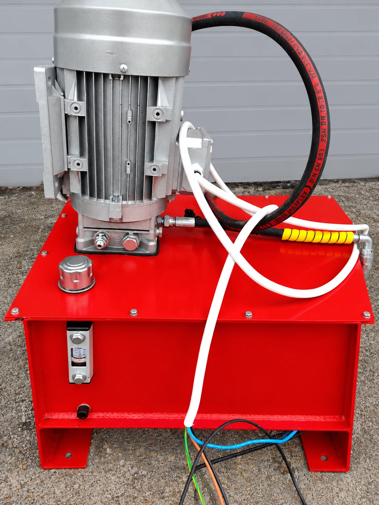
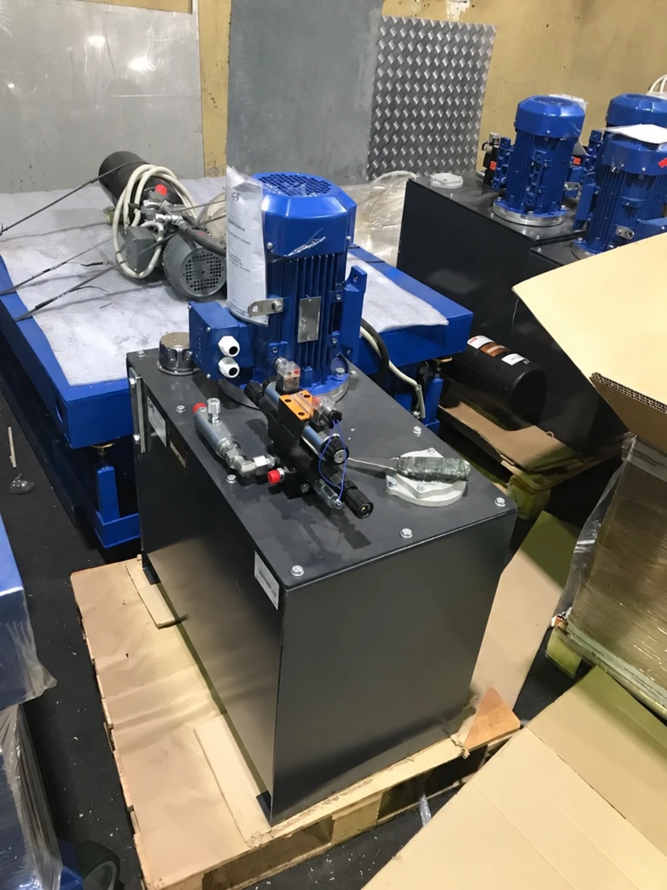
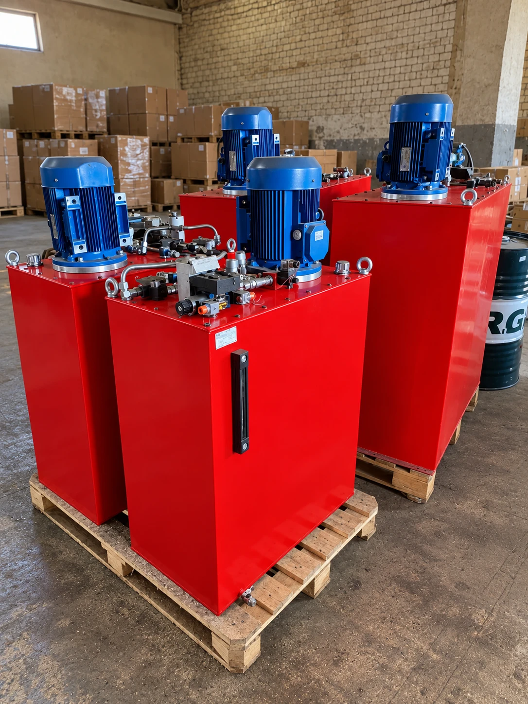

01
01Компактная с пультом
Для одного подъёмника, пульт в комплекте.
- Бак
- 10 л
- Мотор
- 1,5 кВт
- Давление
- 160 бар
Станции с нашего участка, от малой к большой. Каждую собирали под конкретный подъёмник или станок, поэтому вашу тоже рассчитаем под задачу.
01Для одного подъёмника, пульт в комплекте.

02Ставится на пол без рамы, рукав сразу к цилиндру.

03Управление рычагом, без электрики в линии.
 04
04Два насосных агрегата: два контура или резерв.

Для производителей оборудования и дилеров: одна гидросхема, одинаковая сборка, испытания каждой станции.
Нужны цифры по каждой станции: бак, мощность, давление. Если на фото не одна и та же станция в разных ракурсах, а разные проекты, можно добавить «для чего делали» (подъёмник, пресс, стенд). Все жёлтые значения сейчас для примера.